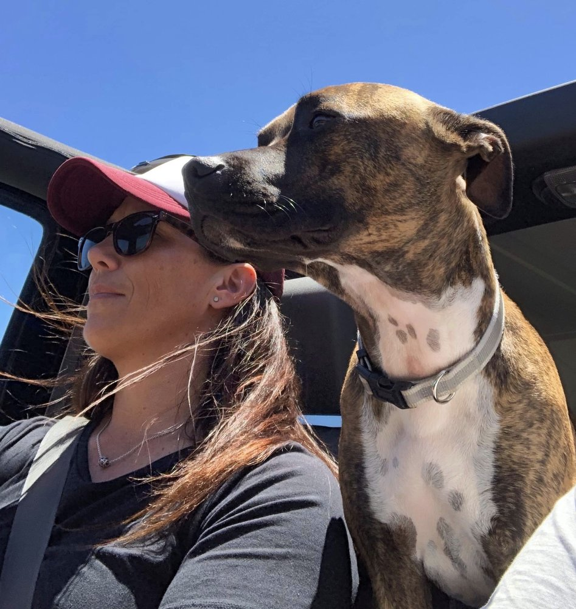

Her own
unbecoming
This is the story that is woven into every session Anita holds. Not as a script — as a living understanding of what it actually takes to come back to yourself.
The life that looked fine
from the outside
For a long time, Anita's life looked like a series of choices. What it actually was, was a pattern. Relationship after relationship with people who couldn't stay — because somewhere beneath the surface, a belief had taken hold: everyone leaves anyway. So she chose people who would prove it right, and called it fate.
She had watched the women around her disappear into lives that felt inherited rather than chosen — dead end jobs, staying in bad relationships, living pay cheque to pay cheque — and she made a promise to herself that she would find another way. She always knew there was more. Not in a vague, hopeful way. In a deep, persistent, bodily way. A knowing that refused to be drowned out no matter how much life piled on top of it.
The question that
changed everything
The turning came through a conversation with a friend, and a name she hadn't heard before: kinesiology. In that first session, she was asked a question that stopped her completely.
What is the one common denominator in all of your relationships?
The answer, when it finally landed, was the beginning of everything. It was her. Not as a fault. As an invitation. She recognised that the only way forward was through — and that she had the power to change the pattern simply by choosing to see it.
What she put down
and what came in
What she put down in that season was not small. She put down the belief that she did not deserve love. That happiness was for other people. That being left was inevitable. She stopped over-explaining herself. She stopped shrinking to fit. She stopped outsourcing her worth to people who couldn't hold it.
And into the space that opened up — unexpectedly — came Macie. A rescue dog from Karratha who had no idea she was teaching Anita what unconditional love actually felt like for the first time. She rescued Macie. Macie rescued her right back.

Macie — rescued from Karratha, and the one who did some rescuing of her own.
The woman she
came home to
Now, Anita lives from a different centre. She understands, in her body and not just her mind, that she is not a product of her past. She is a product of her choices. And she gets to keep choosing — again and again — until the life she is living is genuinely, unmistakably hers.
She swore she would not be with anyone unless they matched what she gave them — love, support, adoration, care. She has that now. Along with a family she chose and a life she is proud of. Not because it looks perfect. Because it is real.